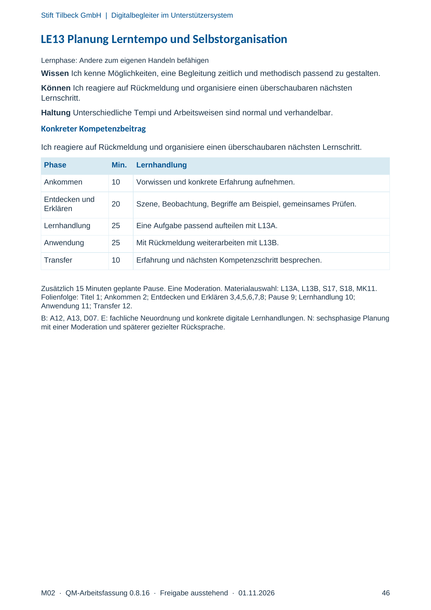
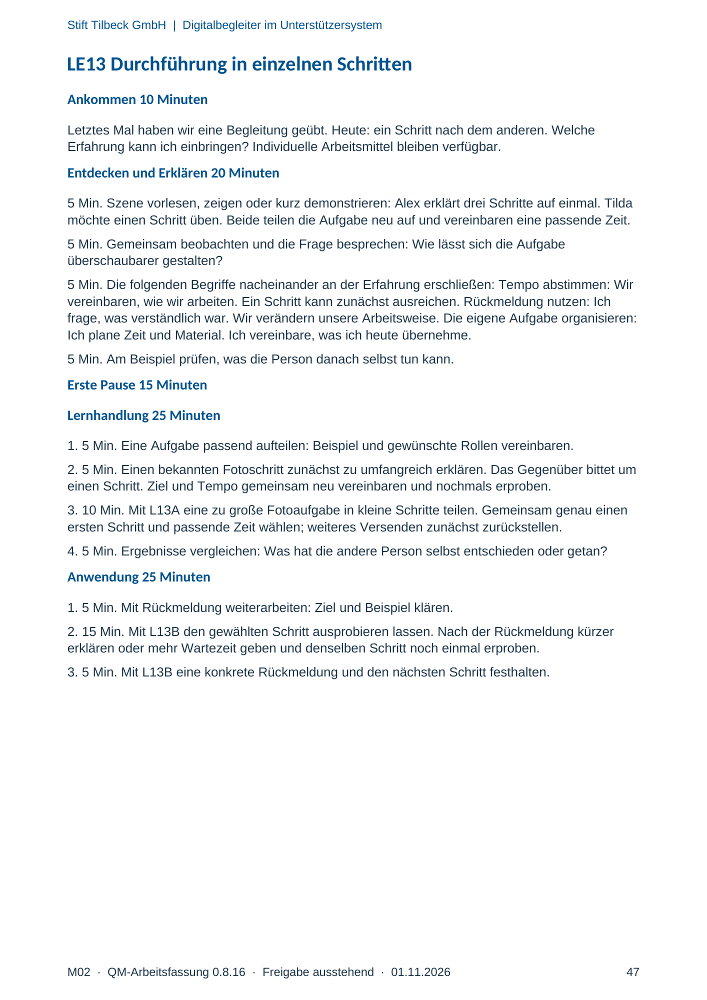
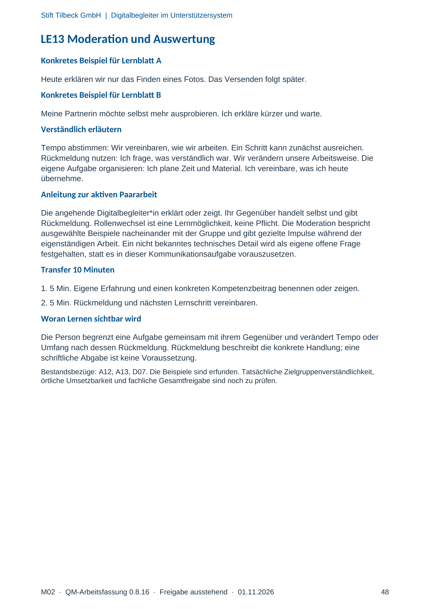

M02 · Originalseite 46, 47, 48
Handbuch und Muster
Gezielte Original-Druckauswahl.
Fragen und Ankreuzfelder werden auf dem Ausdruck bearbeitet. Die Lesefassung speichert keine Antworten.
Lesefassung · Seite 46
Stift Tilbeck GmbH | Digitalbegleiter im Unterstützersystem
LE13 Planung Lerntempo und Selbstorganisation
Lernphase: Andere zum eigenen Handeln befähigen
Wissen Ich kenne Möglichkeiten, eine Begleitung zeitlich und methodisch passend zu gestalten.
Können Ich reagiere auf Rückmeldung und organisiere einen überschaubaren nächsten
Lernschritt.
Haltung Unterschiedliche Tempi und Arbeitsweisen sind normal und verhandelbar.
Konkreter Kompetenzbeitrag
Ich reagiere auf Rückmeldung und organisiere einen überschaubaren nächsten Lernschritt.
Phase Min. Lernhandlung
Ankommen 10 Vorwissen und konkrete Erfahrung aufnehmen.
Entdecken und
Erklären 20 Szene, Beobachtung, Begriffe am Beispiel, gemeinsames Prüfen.
Lernhandlung 25 Eine Aufgabe passend aufteilen mit L13A.
Anwendung 25 Mit Rückmeldung weiterarbeiten mit L13B.
Transfer 10 Erfahrung und nächsten Kompetenzschritt besprechen.
Zusätzlich 15 Minuten geplante Pause. Eine Moderation. Materialauswahl: L13A, L13B, S17, S18, MK11.
Folienfolge: Titel 1; Ankommen 2; Entdecken und Erklären 3,4,5,6,7,8; Pause 9; Lernhandlung 10;
Anwendung 11; Transfer 12.
B: A12, A13, D07. E: fachliche Neuordnung und konkrete digitale Lernhandlungen. N: sechsphasige Planung
mit einer Moderation und späterer gezielter Rücksprache.
Originalseite ansehen

Lesefassung · Seite 47
Stift Tilbeck GmbH | Digitalbegleiter im Unterstützersystem
LE13 Durchführung in einzelnen Schritten
Ankommen 10 Minuten
Letztes Mal haben wir eine Begleitung geübt. Heute: ein Schritt nach dem anderen. Welche
Erfahrung kann ich einbringen? Individuelle Arbeitsmittel bleiben verfügbar.
Entdecken und Erklären 20 Minuten
5 Min. Szene vorlesen, zeigen oder kurz demonstrieren: Alex erklärt drei Schritte auf einmal. Tilda
möchte einen Schritt üben. Beide teilen die Aufgabe neu auf und vereinbaren eine passende Zeit.
5 Min. Gemeinsam beobachten und die Frage besprechen: Wie lässt sich die Aufgabe
überschaubarer gestalten?
5 Min. Die folgenden Begriffe nacheinander an der Erfahrung erschließen: Tempo abstimmen: Wir
vereinbaren, wie wir arbeiten. Ein Schritt kann zunächst ausreichen. Rückmeldung nutzen: Ich
frage, was verständlich war. Wir verändern unsere Arbeitsweise. Die eigene Aufgabe organisieren:
Ich plane Zeit und Material. Ich vereinbare, was ich heute übernehme.
5 Min. Am Beispiel prüfen, was die Person danach selbst tun kann.
Erste Pause 15 Minuten
Lernhandlung 25 Minuten
1. 5 Min. Eine Aufgabe passend aufteilen: Beispiel und gewünschte Rollen vereinbaren.
2. 5 Min. Einen bekannten Fotoschritt zunächst zu umfangreich erklären. Das Gegenüber bittet um
einen Schritt. Ziel und Tempo gemeinsam neu vereinbaren und nochmals erproben.
3. 10 Min. Mit L13A eine zu große Fotoaufgabe in kleine Schritte teilen. Gemeinsam genau einen
ersten Schritt und passende Zeit wählen; weiteres Versenden zunächst zurückstellen.
4. 5 Min. Ergebnisse vergleichen: Was hat die andere Person selbst entschieden oder getan?
Anwendung 25 Minuten
1. 5 Min. Mit Rückmeldung weiterarbeiten: Ziel und Beispiel klären.
2. 15 Min. Mit L13B den gewählten Schritt ausprobieren lassen. Nach der Rückmeldung kürzer
erklären oder mehr Wartezeit geben und denselben Schritt noch einmal erproben.
3. 5 Min. Mit L13B eine konkrete Rückmeldung und den nächsten Schritt festhalten.
Originalseite ansehen

Lesefassung · Seite 48
Stift Tilbeck GmbH | Digitalbegleiter im Unterstützersystem
LE13 Moderation und Auswertung
Konkretes Beispiel für Lernblatt A
Heute erklären wir nur das Finden eines Fotos. Das Versenden folgt später.
Konkretes Beispiel für Lernblatt B
Meine Partnerin möchte selbst mehr ausprobieren. Ich erkläre kürzer und warte.
Verständlich erläutern
Tempo abstimmen: Wir vereinbaren, wie wir arbeiten. Ein Schritt kann zunächst ausreichen.
Rückmeldung nutzen: Ich frage, was verständlich war. Wir verändern unsere Arbeitsweise. Die
eigene Aufgabe organisieren: Ich plane Zeit und Material. Ich vereinbare, was ich heute
übernehme.
Anleitung zur aktiven Paararbeit
Die angehende Digitalbegleiter*in erklärt oder zeigt. Ihr Gegenüber handelt selbst und gibt
Rückmeldung. Rollenwechsel ist eine Lernmöglichkeit, keine Pflicht. Die Moderation bespricht
ausgewählte Beispiele nacheinander mit der Gruppe und gibt gezielte Impulse während der
eigenständigen Arbeit. Ein nicht bekanntes technisches Detail wird als eigene offene Frage
festgehalten, statt es in dieser Kommunikationsaufgabe vorauszusetzen.
Transfer 10 Minuten
1. 5 Min. Eigene Erfahrung und einen konkreten Kompetenzbeitrag benennen oder zeigen.
2. 5 Min. Rückmeldung und nächsten Lernschritt vereinbaren.
Woran Lernen sichtbar wird
Die Person begrenzt eine Aufgabe gemeinsam mit ihrem Gegenüber und verändert Tempo oder
Umfang nach dessen Rückmeldung. Rückmeldung beschreibt die konkrete Handlung; eine
schriftliche Abgabe ist keine Voraussetzung.
Bestandsbezüge: A12, A13, D07. Die Beispiele sind erfunden. Tatsächliche Zielgruppenverständlichkeit,
örtliche Umsetzbarkeit und fachliche Gesamtfreigabe sind noch zu prüfen.
Originalseite ansehen
